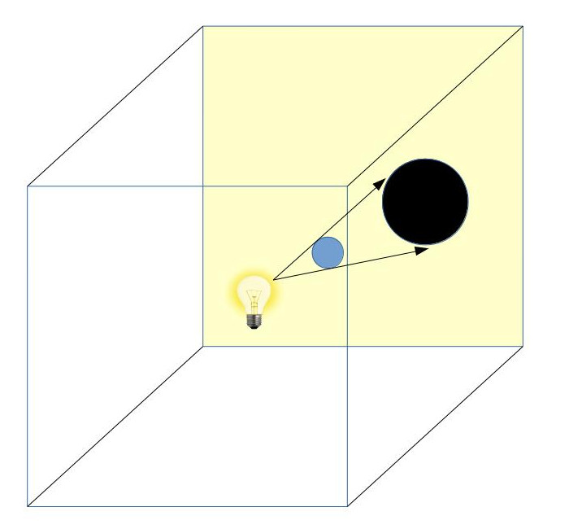
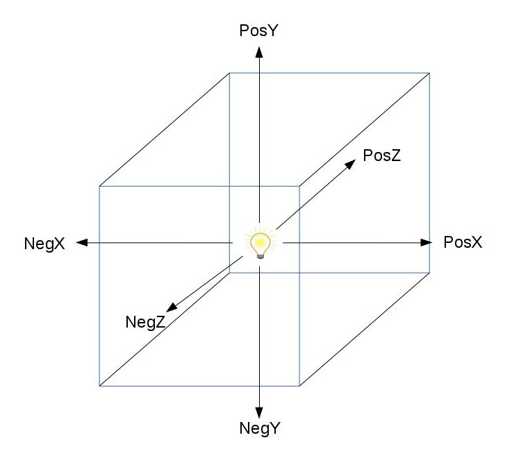

Background
In tutorial 24 we learned the basics of Shadow Mapping - first a rendering pass from the light point of view using the light direction as the viewing vector and then a second pass from the camera point of view using the data from the first pass for shadow calculation. At this point most programmers will ask themselves: this is fine for directional/spot light but what if I want to generate shadows from a point light? There is no specific light direction in this case. Solving this problem is the topic of this tutorial.
The solution to this problem is to recognize that a point light basically casts its light in all directions, so rather than place a rectangular shadow map texture somewhere that will only receive a small portion of that light, we can place the light source in a middle of a texture cube. We now have six rectangular shadow maps and the light has no where to escape. Every light "beam" has to land on one of these six shadow maps and we can sample from it to do our standard shadow calculations. We have already seen the cube map in action in the skybox tutorial so we are already familiar with it.
In practice, in order to simulate the notion of spreading light all over we will do six shadow map rendering passes from the location of the light source but each rendering pass will target a different direction. We are going to make this very simple and target the following axis aligned directions: positive/negative X, positive/negative Y and positive/negative Z. Eventually the cubemap faces will contain the distance of all pixels in the scene that are closest to the light source. By comparing this value to the distance of each pixel to the light during the lighting pass we can tell whether that pixel is in light or shadow.
Take a look at the following picture:
Our scene contains a blue sphere and a point light (the yellow light bulb) is stationed nearby. In the first rendering pass we use a texture cube as the framebuffer. Remember that at this stage we don't care about the original camera location or direction. We place the camera at the position of the point light so it always looks like it is located at the middle of the texture cube. In the example above we see that the current rendering direction is the positive Z axis (into the yellow face). At this point we are back to the standard shadow mapping process so using the depth values in the yellow face we can generate the proper shadow for the blue sphere (these depth values are located in the black circle but the actual shadow will be rendered in the second pass).
The following picture demonstrates the six camera directions that we will use in the first rendering pass:
Since the same scene is rendered six times in the first rendering pass we call this Multipass Shadow Mapping.
Source walkthru
(shadow_map_fbo.h)
class ShadowMapFBO
{
public:
ShadowMapFBO();
~ShadowMapFBO();
bool Init(unsigned int WindowWidth, unsigned int WindowHeight);
void BindForWriting(GLenum CubeFace);
void BindForReading(GLenum TextureUnit);
private:
GLuint m_fbo;
GLuint m_shadowMap;
GLuint m_depth;
};
Let's start the code walkthru by reviewing the changes in our shadow map FBO. The FBO is mostly the same with two minor changes: the BindForWriting() method now takes a cube face enumerator. Since we are doing a multi pass rendering into the cubemap this is how we will tell the GL which cube face we are going to render. The second change is the addition of a separate depth buffer. Previously we used the m_shadowMap class member as the shadow map object (which is actually a depth buffer). Now m_shadowMap is going to be used as a cube map and we need a dedicated depth buffer. For each of the six passes into the cube map faces we will use this depth buffer (and naturally we will clear it before each pass).
(shadow_map_fbo.cpp:46)
bool ShadowMapFBO::Init(unsigned int WindowWidth, unsigned int WindowHeight)
{
// Create the FBO
glGenFramebuffers(1, &m_fbo);
// Create the depth buffer
glGenTextures(1, &m_depth);
glBindTexture(GL_TEXTURE_2D, m_depth);
glTexImage2D(GL_TEXTURE_2D, 0, GL_DEPTH_COMPONENT32, WindowWidth, WindowHeight, 0, GL_DEPTH_COMPONENT, GL_FLOAT, NULL);
glTexParameteri(GL_TEXTURE_2D, GL_TEXTURE_MIN_FILTER, GL_LINEAR);
glTexParameteri(GL_TEXTURE_2D, GL_TEXTURE_MAG_FILTER, GL_LINEAR);
glTexParameteri(GL_TEXTURE_2D, GL_TEXTURE_WRAP_S, GL_CLAMP_TO_EDGE);
glTexParameteri(GL_TEXTURE_2D, GL_TEXTURE_WRAP_T, GL_CLAMP_TO_EDGE);
glBindTexture(GL_TEXTURE_2D, 0);
// Create the cube map
glGenTextures(1, &m_shadowMap);
glBindTexture(GL_TEXTURE_CUBE_MAP, m_shadowMap);
glTexParameteri(GL_TEXTURE_CUBE_MAP, GL_TEXTURE_MIN_FILTER, GL_LINEAR);
glTexParameteri(GL_TEXTURE_CUBE_MAP, GL_TEXTURE_MAG_FILTER, GL_LINEAR);
glTexParameteri(GL_TEXTURE_CUBE_MAP, GL_TEXTURE_WRAP_S, GL_CLAMP_TO_EDGE);
glTexParameteri(GL_TEXTURE_CUBE_MAP, GL_TEXTURE_WRAP_T, GL_CLAMP_TO_EDGE);
glTexParameteri(GL_TEXTURE_CUBE_MAP, GL_TEXTURE_WRAP_R, GL_CLAMP_TO_EDGE);
for (uint i = 0 ; i < 6 ; i++) {
glTexImage2D(GL_TEXTURE_CUBE_MAP_POSITIVE_X + i, 0, GL_R32F, WindowWidth, WindowHeight, 0, GL_RED, GL_FLOAT, NULL);
}
glBindFramebuffer(GL_FRAMEBUFFER, m_fbo);
glFramebufferTexture2D(GL_FRAMEBUFFER, GL_DEPTH_ATTACHMENT, GL_TEXTURE_2D, m_depth, 0);
// Disable writes to the color buffer
glDrawBuffer(GL_NONE);
// Disable reads from the color buffer
glReadBuffer(GL_NONE);
GLenum Status = glCheckFramebufferStatus(GL_FRAMEBUFFER);
if (Status != GL_FRAMEBUFFER_COMPLETE) {
printf("FB error, status: 0x%x\n", Status);
return false;
}
glBindFramebuffer(GL_FRAMEBUFFER, 0);
return GLCheckError();
}
This is how we initialize the shadow map. First we create and setup the depth buffer. Nothing new here. Next comes the cubemap texture. GL_TEXTURE_CUBE_MAP is used as the target. The interesting part here is the way we initialize the six cube faces. OpenGL provides a macro for each face: GL_TEXTURE_CUBE_MAP_POSITIVE_X, GL_TEXTURE_CUBE_MAP_NEGATIVE_X, etc. They happen to be defines sequentially which makes the loop above possible (see glew.h for the remaining macros; around line 1319 in the version I have). Each face is initialized with a single 32 bit floating point value in each texel.
(tutorial43.cpp:183)
virtual void RenderSceneCB()
{
CalcFPS();
m_scale += 0.05f;
m_pGameCamera->OnRender();
ShadowMapPass();
RenderPass();
RenderFPS();
glutSwapBuffers();
}
This is the main render scene function and as you can see, there is no change in comparison to previous shadow mapping tutorials. At the high level we have the same two passes of shadow map generation and rendering.
(tutorial43.cpp:200)
void ShadowMapPass()
{
glCullFace(GL_FRONT);
m_shadowMapEffect.Enable();
PersProjInfo ProjInfo;
ProjInfo.FOV = 90.0f;
ProjInfo.Height = WINDOW_HEIGHT;
ProjInfo.Width = WINDOW_WIDTH;
ProjInfo.zNear = 1.0f;
ProjInfo.zFar = 100.0f;
Pipeline p;
p.SetPerspectiveProj(m_persProjInfo);
glClearColor(FLT_MAX, FLT_MAX, FLT_MAX, FLT_MAX);
for (uint i = 0 ; i < NUM_OF_LAYERS ; i++) {
m_shadowMapFBO.BindForWriting(gCameraDirections[i].CubemapFace);
glClear(GL_DEPTH_BUFFER_BIT | GL_COLOR_BUFFER_BIT);
p.SetCamera(m_pointLight.Position, gCameraDirections[i].Target, gCameraDirections[i].Up);
p.Orient(m_mesh1Orientation);
m_shadowMapEffect.SetWorld(p.GetWorldTrans());
m_shadowMapEffect.SetWVP(p.GetWVPTrans());
m_mesh.Render();
p.Orient(m_mesh2Orientation);
m_shadowMapEffect.SetWorld(p.GetWorldTrans());
m_shadowMapEffect.SetWVP(p.GetWVPTrans());
m_mesh.Render();
}
}
This is the full shadow map pass. There are a few things we need to notice here that are different from regular shadow mapping. First off is that the field of view is set to 90 degrees. The reason is that we are going to render the entire world into the cube map so to align the camera perfectly into each face we set it to one quarter of a full circle (360 degrees).
Next is that the clear value of the cube map is set to the maximum value of the floating point (FLT_MAX). Every texel which will actually be rendered into will have a much smaller value. The "real" pixels will always have values smaller than the un-rendered texels.
Finally, the loop over the cube map faces uses the gCameraDirections array (see below) in order to set the proper face in the FBO and to orient the camera into that face.
(tutorial43.cpp:45)
struct CameraDirection
{
GLenum CubemapFace;
Vector3f Target;
Vector3f Up;
};
CameraDirection gCameraDirections[NUM_OF_LAYERS] =
{
{ GL_TEXTURE_CUBE_MAP_POSITIVE_X, Vector3f(1.0f, 0.0f, 0.0f), Vector3f(0.0f, -1.0f, 0.0f) },
{ GL_TEXTURE_CUBE_MAP_NEGATIVE_X, Vector3f(-1.0f, 0.0f, 0.0f), Vector3f(0.0f, -1.0f, 0.0f) },
{ GL_TEXTURE_CUBE_MAP_POSITIVE_Y, Vector3f(0.0f, 1.0f, 0.0f), Vector3f(0.0f, 0.0f, -1.0f) },
{ GL_TEXTURE_CUBE_MAP_NEGATIVE_Y, Vector3f(0.0f, -1.0f, 0.0f), Vector3f(0.0f, 0.0f, 1.0f) },
{ GL_TEXTURE_CUBE_MAP_POSITIVE_Z, Vector3f(0.0f, 0.0f, 1.0f), Vector3f(0.0f, -1.0f, 0.0f) },
{ GL_TEXTURE_CUBE_MAP_NEGATIVE_Z, Vector3f(0.0f, 0.0f, -1.0f), Vector3f(0.0f, -1.0f, 0.0f) }
};
This array combines the enums defined by GL to denote each cube face along with the two vectors used to orient the camera toward that face.
(shadow_map_fbo.cpp:96)
void ShadowMapFBO::BindForWriting(GLenum CubeFace)
{
glBindFramebuffer(GL_DRAW_FRAMEBUFFER, m_fbo);
glFramebufferTexture2D(GL_FRAMEBUFFER, GL_COLOR_ATTACHMENT0, CubeFace, m_shadowMap, 0);
glDrawBuffer(GL_COLOR_ATTACHMENT0);
}
The function above is used by the shadow map pass to setup the face that will be rendered to. First we bind the FBO to make it current. After that we bind the face to the first color attachment and enable writing to it.
(tutorial43.cpp:237)
void RenderPass()
{
glCullFace(GL_BACK);
glBindFramebuffer(GL_FRAMEBUFFER, 0);
glClearColor(0.0f, 0.0f, 0.0f, 0.0f);
glClear(GL_COLOR_BUFFER_BIT | GL_DEPTH_BUFFER_BIT);
m_lightingEffect.Enable();
m_shadowMapFBO.BindForReading(SHADOW_TEXTURE_UNIT);
m_lightingEffect.SetEyeWorldPos(m_pGameCamera->GetPos());
Pipeline p;
p.SetPerspectiveProj(m_persProjInfo);
p.SetCamera(*m_pGameCamera);
// Render the quads
m_pGroundTex->Bind(COLOR_TEXTURE_UNIT);
p.Orient(m_quad1Orientation);
m_lightingEffect.SetWorldMatrix(p.GetWorldTrans());
m_lightingEffect.SetWVP(p.GetWVPTrans());
m_quad.Render();
p.Orient(m_quad2Orientation);
m_lightingEffect.SetWorldMatrix(p.GetWorldTrans());
m_lightingEffect.SetWVP(p.GetWVPTrans());
m_quad.Render();
// Render the meshes
p.Orient(m_mesh1Orientation);
m_lightingEffect.SetWorldMatrix(p.GetWorldTrans());
m_lightingEffect.SetWVP(p.GetWVPTrans());
m_mesh.Render();
p.Orient(m_mesh2Orientation);
m_lightingEffect.SetWorldMatrix(p.GetWorldTrans());
m_lightingEffect.SetWVP(p.GetWVPTrans());
m_mesh.Render();
}
This is the full lighting pass. Everything is back to normal - we render into the default framebuffer, we bind the cubemap for reading and reset the camera based on the viewer position. This completes our C++ code review. Now let's take a look at the shaders.
(shadow_map.vs)
#version 330
layout (location = 0) in vec3 Position;
layout (location = 1) in vec2 TexCoord;
layout (location = 2) in vec3 Normal;
uniform mat4 gWVP;
uniform mat4 gWorld;
out vec3 WorldPos;
void main()
{
vec4 Pos4 = vec4(Position, 1.0);
gl_Position = gWVP * Pos4;
WorldPos = (gWorld * Pos4).xyz;
}
We are going to render from the position of the point light and the camera is currently aligned on one of the axis. The value that will be written into the cubemap is the distance from the object to the point light. So we need the object world position in the FS where this distance will be calculated.
(shadow_map.fs)
#version 330
in vec3 WorldPos;
uniform vec3 gLightWorldPos;
out float FragColor;
void main()
{
vec3 LightToVertex = WorldPos - gLightWorldPos;
float LightToPixelDistance = length(LightToVertex);
FragColor = LightToPixelDistance;
}
We now have the world space position of the pixel in the FS and the world space position of the point light is provided as a uniform. We calculate the vector from the light to the pixel, take its length and write it out.
(lighting.vs)
#version 330
layout (location = 0) in vec3 Position;
layout (location = 1) in vec2 TexCoord;
layout (location = 2) in vec3 Normal;
out vec2 TexCoord0;
out vec3 Normal0;
out vec3 WorldPos0;
uniform mat4 gWVP;
uniform mat4 gWorld;
void main()
{
gl_Position = gWVP * vec4(Position, 1.0);
TexCoord0 = TexCoord;
Normal0 = (gWorld * vec4(Normal, 0.0)).xyz;
WorldPos0 = (gWorld * vec4(Position, 1.0)).xyz;
}
This is the updated lighting VS and what's interesting here is the missing piece - we no longer need to calculate the light space position of the vertex as we did in the original shadow mapping algorithm. This was required when we needed to place the shadow map along the light vector but now we only need the vector from the light to the pixel in world space in order to sample from the cubmap. Everything we need for this is here so we are good to go.
(lighting.fs)
...
uniform samplerCube gShadowMap;
...
float CalcShadowFactor(vec3 LightDirection)
{
float SampledDistance = texture(gShadowMap, LightDirection).r;
float Distance = length(LightDirection);
if (Distance < SampledDistance + EPSILON)
return 1.0; // Inside the light
else
return 0.5; // Inside the shadow
}
The code excerpt above contains the key changes in the lighting FS. The shadow map uniform that was previously sampler2D (in tutorial 24) or sampler2DShadow (in tutorial 42) is now a samplerCube. In order to sample from it we use the LightDirection vector which was calculated as the vector from the point light to the pixel. Note that all the three coordinates (X, Y and Z) of the light direction vector are used for sampling. Since the cube has three dimension we need a three dimension vector in order to select the proper face and the specific texel in that face. Comparison of the sampled value with the distance from the light to the pixel tells us whether we are in light or shadow.
In this tutorial example I've placed a couple of spheres facing a point light such that the shadow will fall directly on the quad behind each sphere. Here's the result: